User confirmed rear wheel airborne/free, no hand contact, same power supply and firmware conditions for all five runs. All amplitudes ±4 rad/s. Fresh A2 and A1 samples share one phase time origin.
Analysis report · Metrics CSV · Five-page PDF · Zoom PDF
| Hz | Amplitude (%) | Phase-equivalent lag (ms) | RMS error (rad/s) | Peak torque estimate (Nm) |
|---|---|---|---|---|
| 0.5 | 99.28 | 8.78 | 0.326 | 0.409 |
| 1 | 98.08 | 7.05 | 0.352 | 0.376 |
| 2 | 96.56 | 5.59 | 0.392 | 0.435 |
| 5 | 95.33 | 3.85 | 0.483 | 0.419 |
| 10 | 96.22 | 3.53 | 0.735 | 0.463 |
Lag is phase-equivalent against the held transmitted target, not identified motor-internal delay. Torque is current × Kt, not independently measured shaft/net torque.
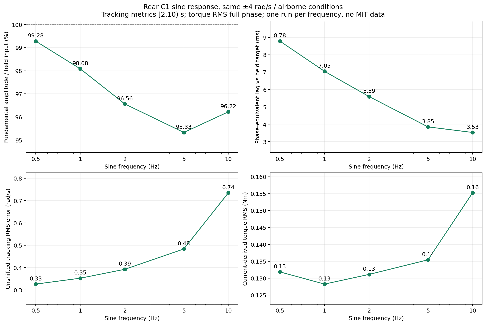
PNG · SVG · PDF · Three-cycle zoom
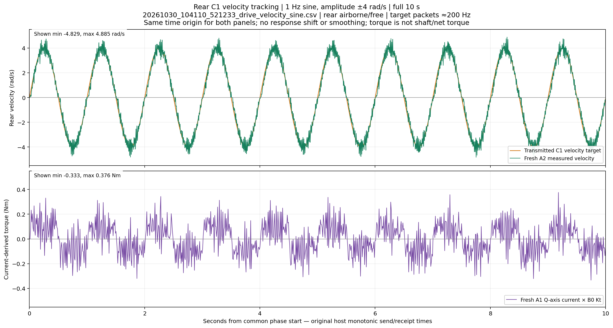
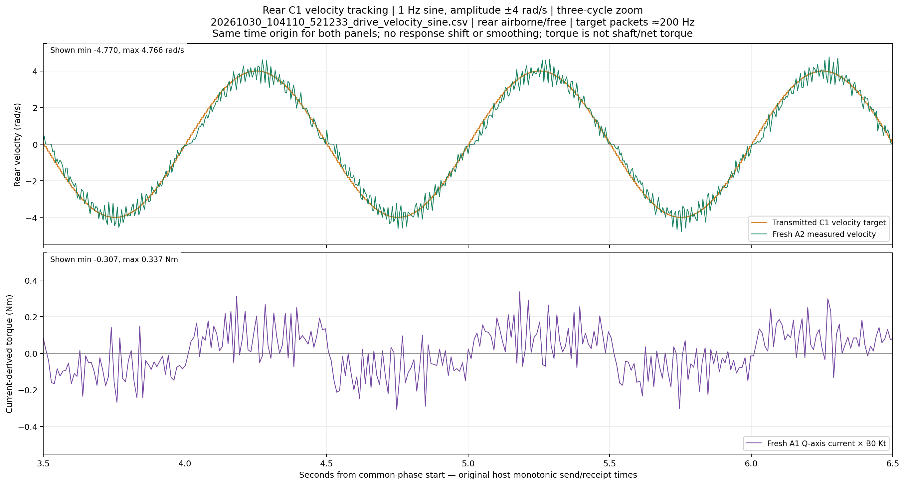
PNG · SVG · PDF · Three-cycle zoom
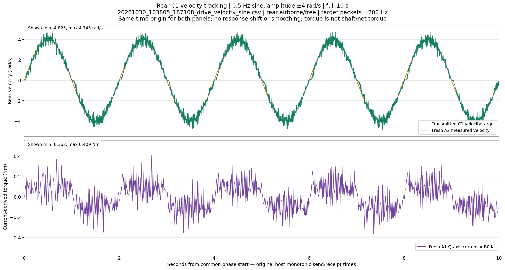
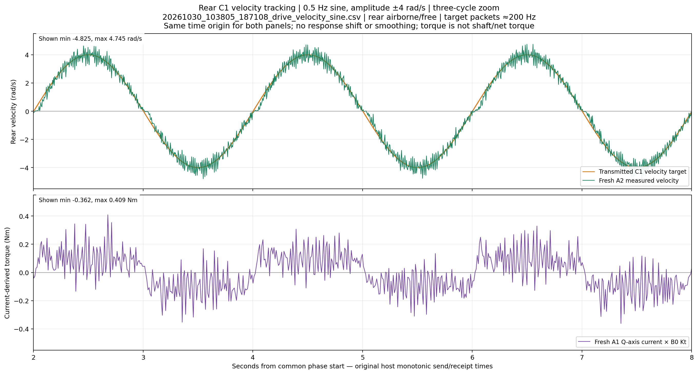
PNG · SVG · PDF · Three-cycle zoom
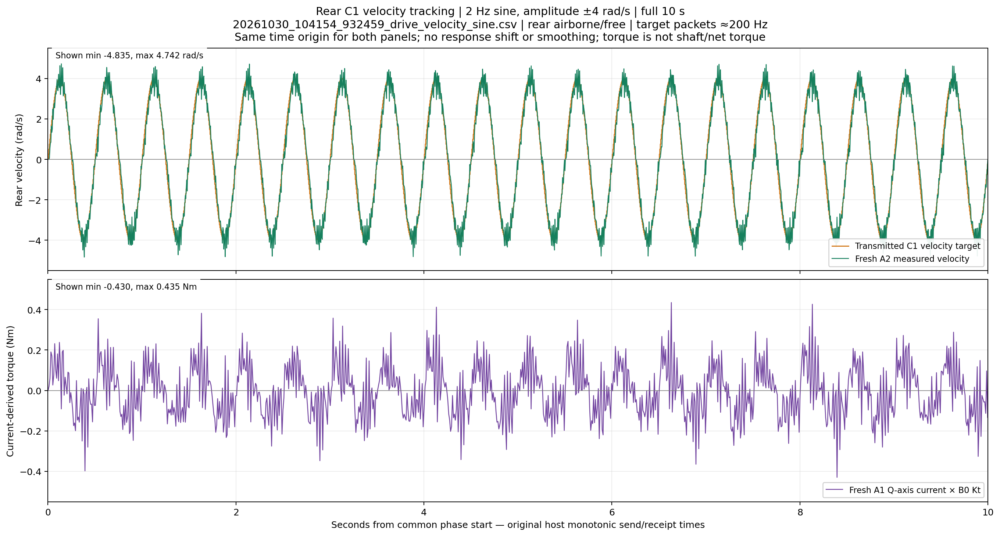
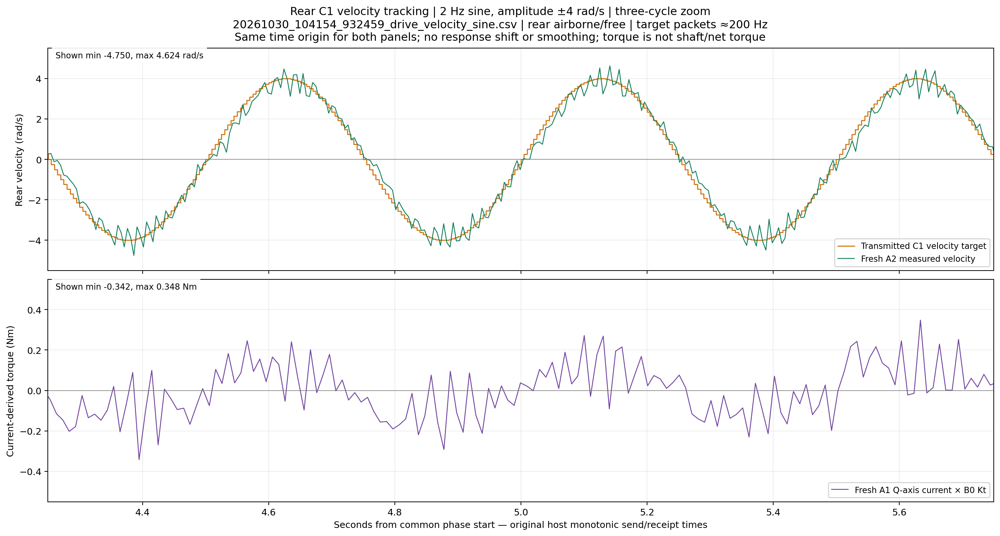
PNG · SVG · PDF · Three-cycle zoom
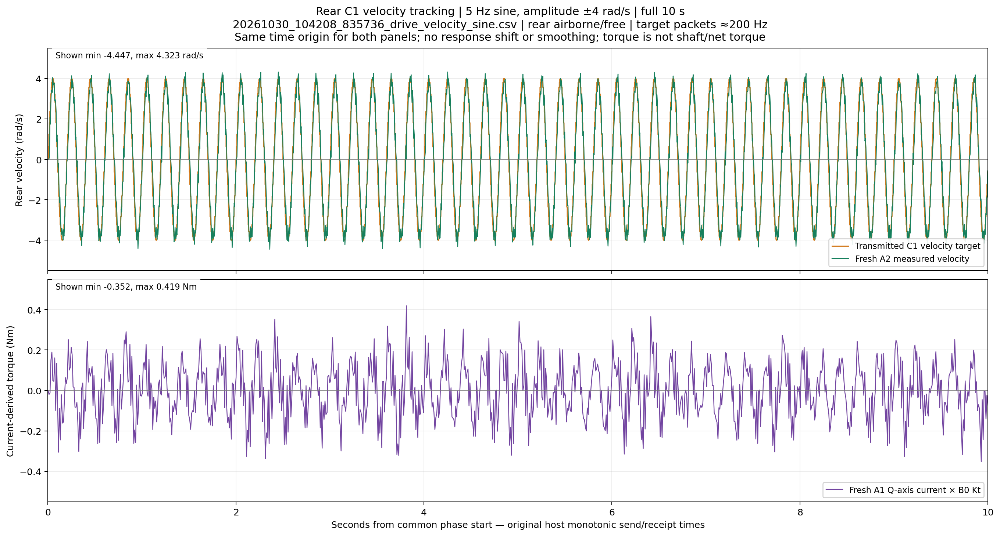
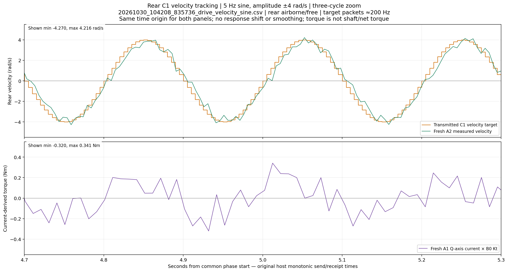
PNG · SVG · PDF · Three-cycle zoom
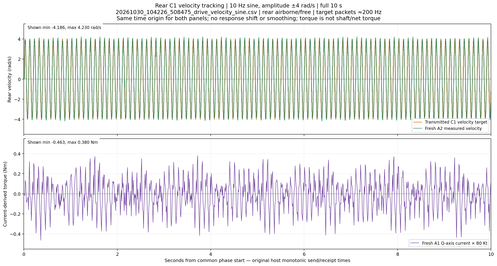
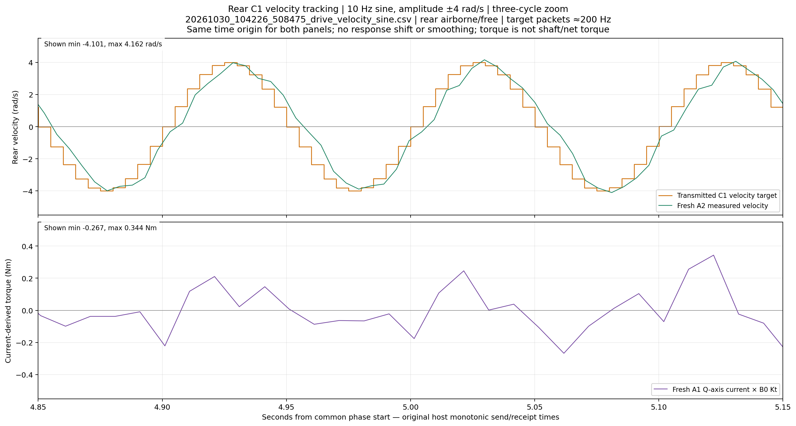